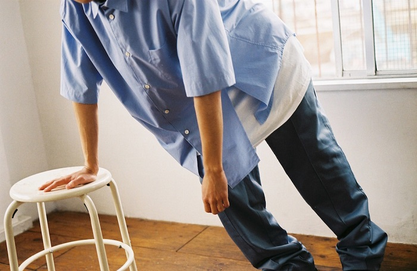

kudos
18SS
工藤 司がデザイナーを務めるブランド。自身にとっての"ヨーロッパ卒業コレクション"として作品を制作し、2017年4月に帰国。
工藤 司は早稲田大学を卒業後、アントワープ王立芸術学院に進学。中退後、服作りの基礎を学ぶ為にパリにてパターンの学校に通いながら「JACQUEMUS」や「J.W. ANDERSON」でデザインアシスタント、「Y/PROJECT」でパターンアシスタントとして経験を積んだ後、TSUKASA KUDOとして独立。自身にとっての"ヨーロッパ卒業コレクション"として作品を制作し、2017年4月に帰国。今のブランドkudosに至る。
このシーズンのテーマはi believe in you
kudosはこのシーズンで大きくブレイクした。私が友人からこのブランドを教わったとき、「kudosはとにかくシャツがいい」といった説明と共に教わった。その説明の通り、kudosは一つのシーズンでシャツを数方販売し、そのどれもが特徴的である。
例えば、このブルーの半袖シャツ。素地感は固めで、ドレスシャツかのような風合いを持つ。また裾部分が大胆にカッティングされていて非常に目を引く。
このデニムセットアップも同シーズンのものだ。こちらはレザーのパッチをデニムジャケットの正面に配置し、パンツは大胆に異なる色の切り替えになっている。
こういった大胆な切り替えもkudosの真骨頂で、こういったハサミづかいこそが工藤さんの得意分野なのだということルックからも伝わってくる。
モデルにはラッパーのKID FRESINOを起用し、斬新ながらもしっかりと日本人にはまるような、良いプロダクションも展開しているブランドだ。
18AW
このシーズンは"NEW PERIOD"がテーマとなり、工藤さんにとって節目のシーズンとなった。
あくまでこれは著者の感覚でしかないが、この次のシーズン19ssからkudosのプロダクトの雰囲気は少し変化し、今までのkudosらしさを残しながらも、また新しい雰囲気のプロダクトを展開していくこととなる。
具体的に言えばこの次のシーズンから、Ｔシャツの素地感やサイズ感が変わりルックの雰囲気も変化したことは、私自身の気づきである。ちなみに著者はこのシーズンが一番のお気に入りだ。
アイテムで言えばこのトレンチコート。襟が非常に大きい形になっており、チンフラップとしても活用できる。また裾部分には同シーズンのシャツでも使われていた、「穴」のディティールが使われていて、そこを利用して裾をめくるような着こなしもできる。
ちなみにそのシャツがこれだ。
とにかく斬新でカッコイイブランドのkudos、みなさんも是非チェックしてほしい。